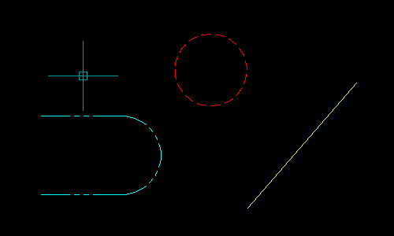

Double Offset
This page is delivered for consistency purposes only, as part of the LeeMac sample module of DynALisp, which shows how DynALisp turns existing AutoLISP programs into a module. The program and its description are the work of Lee Mac, who keeps all the credit for them. The original page, with the latest version, is on Lee Mac's website: https://lee-mac.com/doubleoffset.html
| Function Syntax | LM-DoubleOffset – original syntax: DoubleOffset / DOff (see aliases) |
| Current Version | 1.1 |
| Compatible with AutoCAD for Mac? | No |
| Compatible with AutoCAD LT? | Yes |
| Original Page | lee-mac.com/doubleoffset.html |
Program Description
This program operates in much the same way as the standard offset command, however will perform an offset to both sides of the selected object.
In line with the standard command, this program also provides options to enable the user to control the destination layer for offset objects, and furthermore whether the original objects are erased following the offset operation.
Example of Usage

Bundled program notes
;;--------------------=={ Double Offset }==-------------------;;
;; ;;
;; Offsets each object in a selection to both sides by a ;;
;; specified distance. With additional controls for erasure ;;
;; of source object and offset layer. ;;
;;------------------------------------------------------------;;
;; Author: Lee Mac, Copyright © 2011 - www.lee-mac.com ;;
;;------------------------------------------------------------;;
;; Version: 1-1 20100912 ;;
;;------------------------------------------------------------;;
Command Names And Aliases
As in every DynALisp module, each program of this sample module has one main command, named LM-*, and the original command names of Lee Mac's page are kept as its aliases: they run the same command, and can be added, renamed or removed in Dyl-Suite (saved in Resources\Aliases.csv).
| Command | Aliases | Name |
|---|---|---|
| LM-DoubleOffset | DOFF, DOUBLEOFFSET | Double Offset |